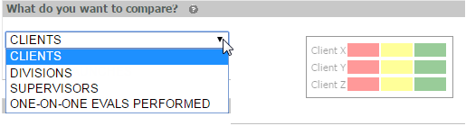
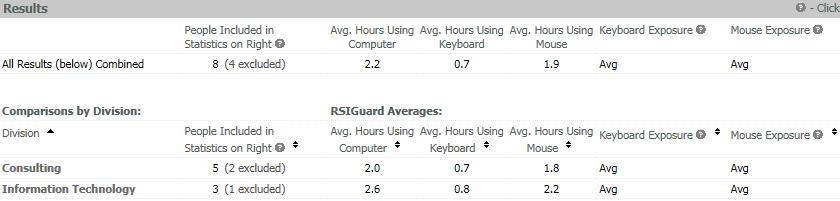
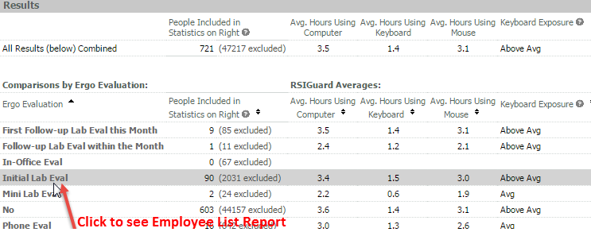

The Desktop Aggregate Report allows RSIGuard information to be compared between different HR attributes (such as Departments, Locations, etc.).
Select what you want to compare by selecting from the HR attributes shown in the drop-down list. (List defaults to first attribute in list.)

The example below shows a comparison for Divisions with RSI Guard data.

Click on the help icon in the column head to see an explanation.
Click on the value in the first column to see an Employee List Report for people included in this group. For example, if you are comparing by division, clicking on the division name in the first column gives you an Employee List Report containing the users assigned to that division.
If you have Case Manager, you may also be able to choose to compare by Type of Evaluation or Type of Evaluation & Priority. Availability of these options depends on system configuration.
A report by evaluation type gives RSI data for people in the different evaluation categories. Click the evaluation type to see an Employee List Report of the people included.

The Information columns included in the report are explained in the following table.
|
Number of People Included in the Statistics |
Included People: The RSIGuard data that is used to create this report comes from people with RSIGuard installations that have sent more than four (4) days' of usage statistics to the OES in the last 28 days. Excluded People: Some peoples' RSIGuard data may not be included in this report. These exclusions happen for a variety of reasons, such as:
To see a list of the excluded people, click on the link in the left column for the area of the company that you are interested in, then sort on the "Status" column when you see the Employee List Report. People that do not have a status of 'OK' have been excluded from this RSI Guard Aggregate report. (People with a status of 'OK *' -with a star- have also been excluded.) |
|
Average Hours Using Computer |
Average number of hours per day users in the organizational entity are using the computer |
|
Average Hours Using Keyboard |
Average number of hours per day users in the organizational entity are using the keyboard |
|
Average Hours Using Mouse |
Average number of hours per day users in the organizational entity are using the mouse |
|
Keyboard Exposure |
Calculated as the average keyboard strain exposure for the users from the selected group that have sent more than four days' worth of computer use data to the OES in the last 30 days. Keyboard strain exposure is calculated as a function of the frequency of key presses, key force pressure estimate, as well as which particular keys have been pressed. For example, pressing Q or Shift-G requires more muscular output than just pressing G. |
|
Mouse Exposure |
Calculated as the average mouse strain exposure for the users from the selected group that have sent more than four days' worth of computer use data to the OES in the last 30 days. Mouse strain exposure is calculated as a function of the types and frequency of mouse activities (moving, clicking, drag & drops, wheel scrolling, etc.). |
|
Average Break Compliance |
Average user compliance with all breaks (both natural and prompted breaks). It considers the ratio of BreakTimer-suggested breaks that were taken to the number suggested (if BreakTimer is enabled). It also considers any natural (self-initiated) breaks of at least 4 minutes, and gives more credit if the rest was taken when the user had built up 70% or more of the exposure level that would trigger a BreakTimer break. |
|
% Compliant with Microbreaks
|
Average % compliance with microbreaks. Microbreak Compliance is the ratio of microbreaks taken (i.e. the user pauses for the suggested brief rest) to the number of microbreaks suggested by RSIGuard ForgetMeNots. |
See Appendix D for more details.
Print/Save Options
A Desktop Aggregate Report may be printed by selecting Print Results, saved as a web page or exported to Excel by clicking one of the output buttons.